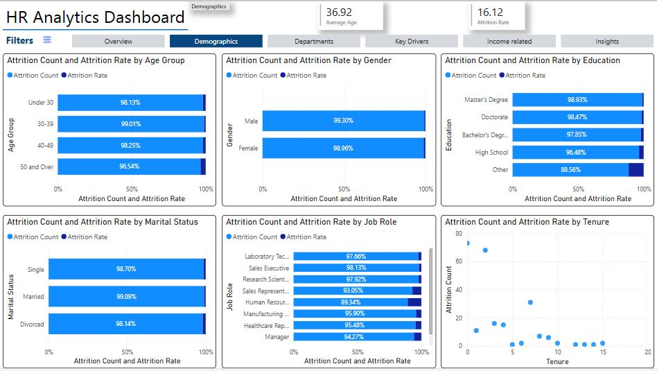
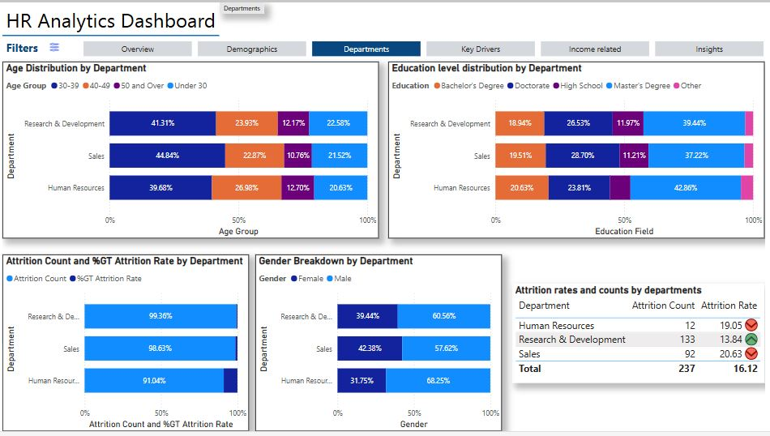
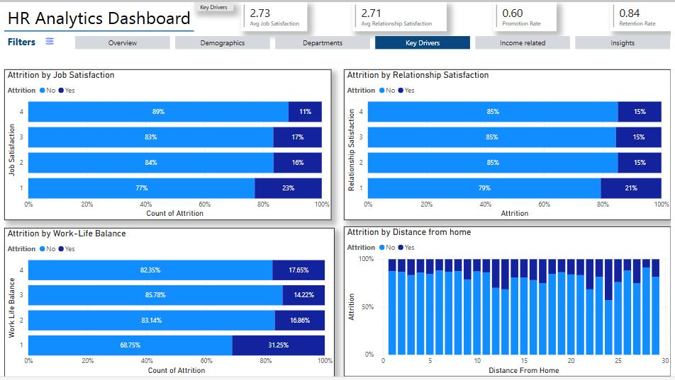
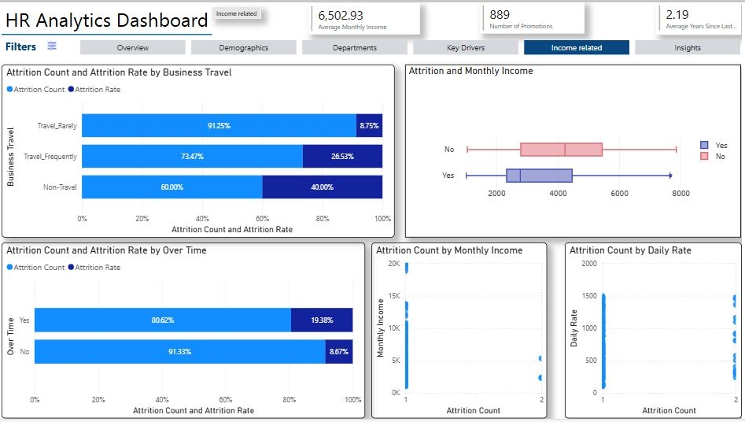
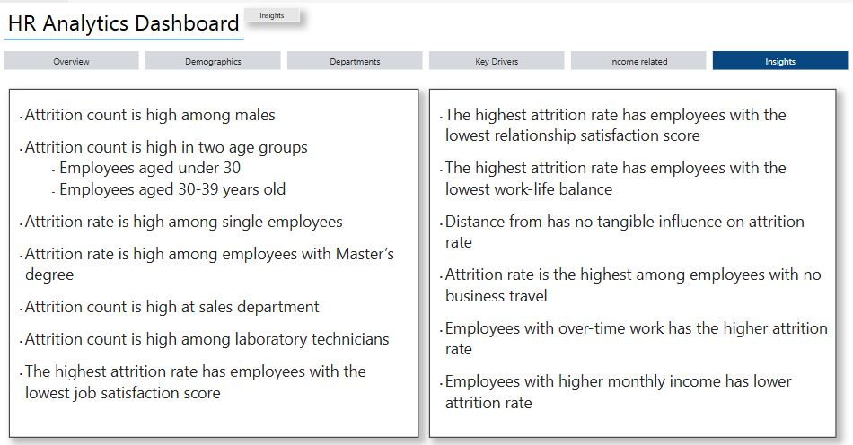
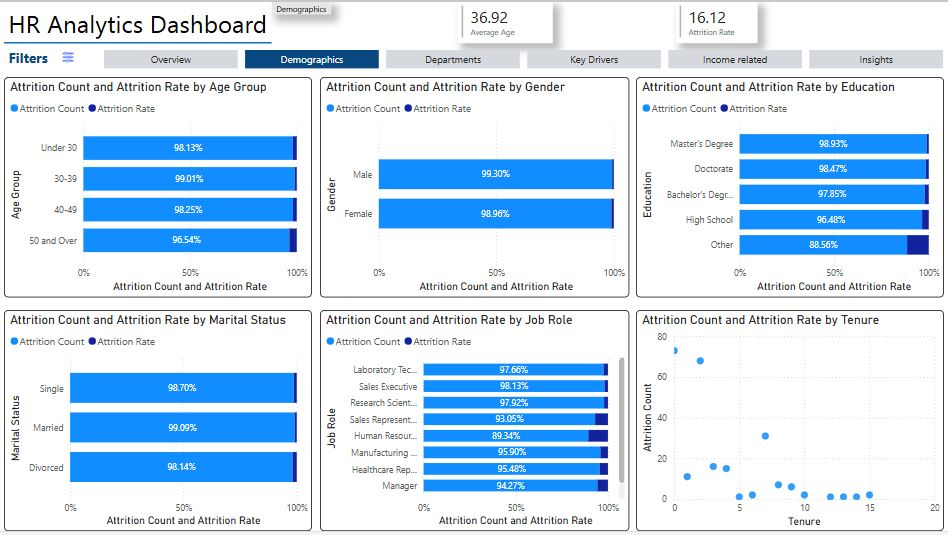
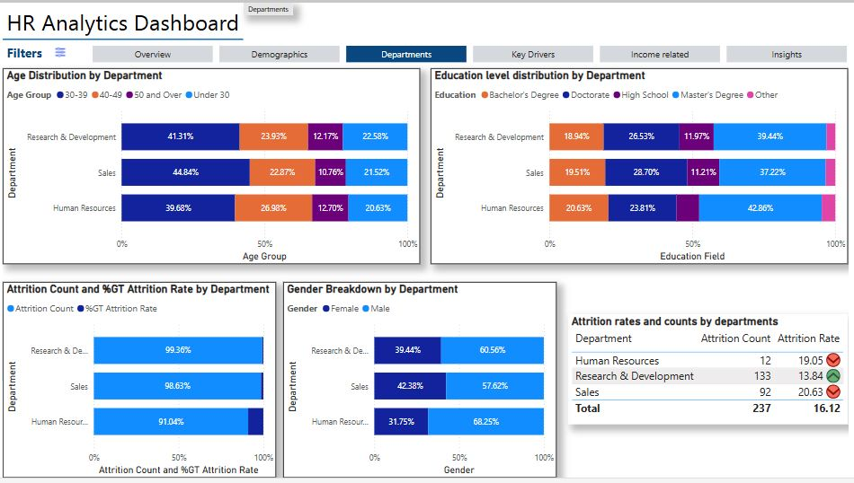
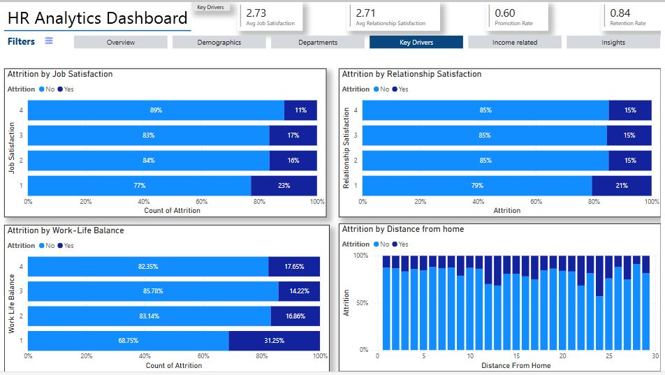
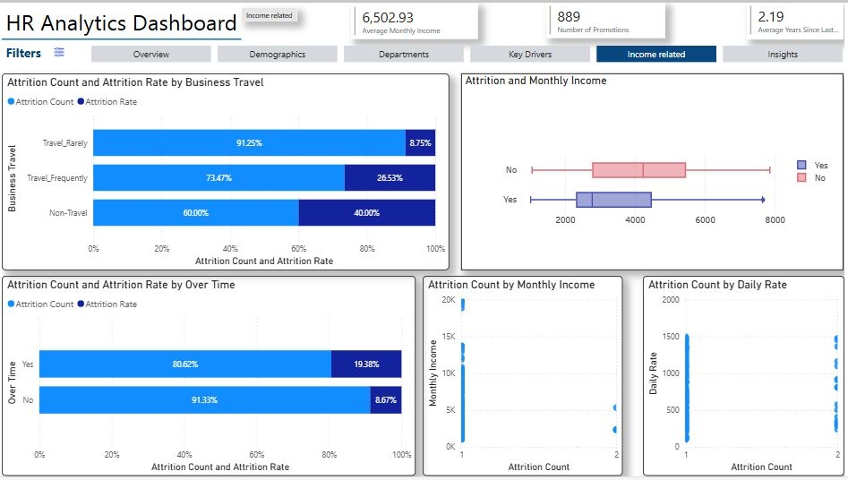
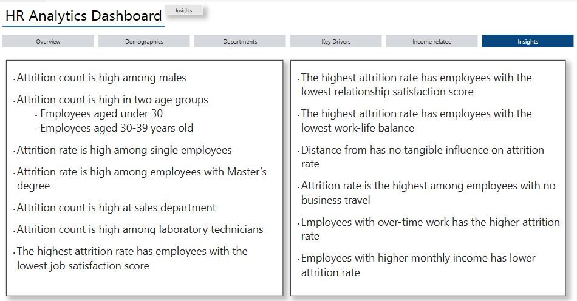

HR Employee Attrition
Purpose:
This report delivers a comprehensive analysis of employee attrition, uncovering the reasons behind turnover and proposing actionable strategies to mitigate it.
Key Objectives:
- Analyze the root causes of employee attrition through statistical methods and employee feedback.
- Identify departments, roles, and employee demographics most impacted by attrition.
- Propose targeted strategies to enhance retention and reduce turnover.
Description:
The analysis segmented employees based on department, job role, and tenure, uncovering attrition trends and temporal patterns. By calculating attrition rates and employing statistical methods, the report identified critical factors contributing to turnover. Insights revealed were instrumental in guiding strategies to improve employee satisfaction, stabilize retention, and drive organizational growth.
Key Findings and Proposed Strategies:
- High Attrition Among Male Employees: Conduct focus groups or surveys to identify specific issues. Introduce targeted retention programs, such as mentorship or leadership training.
- High Attrition Among Single Employees: Address unique needs with flexible schedules, wellness programs, and community-building activities.
- High Attrition Among Master’s Degree Holders: Create career advancement opportunities and leadership development programs.
- High Attrition in the Sales Department: Enhance job satisfaction with competitive compensation, workload adjustments, and sales training.
- High Attrition Among Laboratory Technicians: Develop career progression plans and offer cross-training or skill development opportunities.
- Low Job Satisfaction Equals High Attrition: Use satisfaction surveys to identify and resolve specific issues, such as workload or recognition.
- Low Relationship Satisfaction Equals High Attrition: Foster workplace relationships with team-building activities and conflict resolution training.
- Low Work-Life Balance Equals High Attrition: Implement flexible work arrangements, wellness initiatives, and balanced workloads.
- Business Travel and Attrition: Provide travel opportunities for non-traveling employees and address other potential concerns.
- Overtime and Attrition: Adjust workloads, consider additional staffing, or automate processes to reduce overtime.
- Compensation and Retention: Ensure competitive pay packages and offer performance-based incentives to retain employees.
Insights Impact:
This report provided actionable strategies to address critical areas of concern, resulting in improved job satisfaction, enhanced employee retention, and long-term organizational stability.
Visualization:
 








